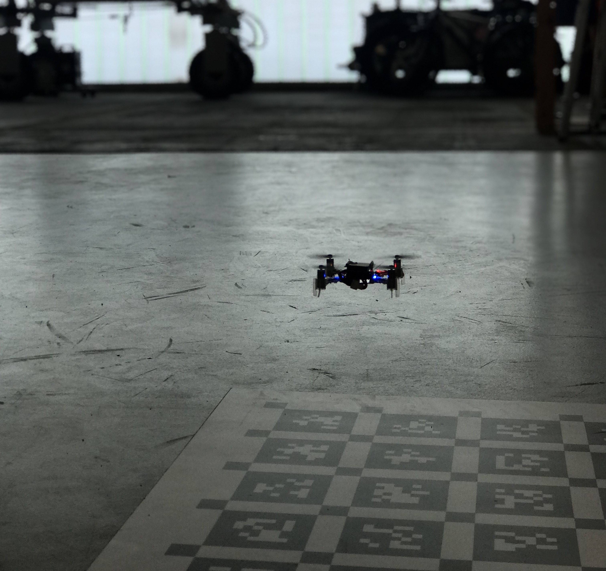
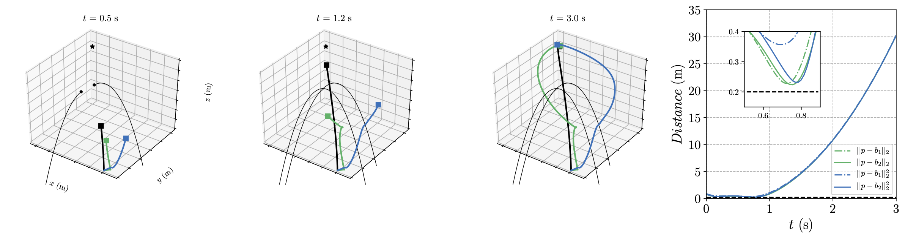
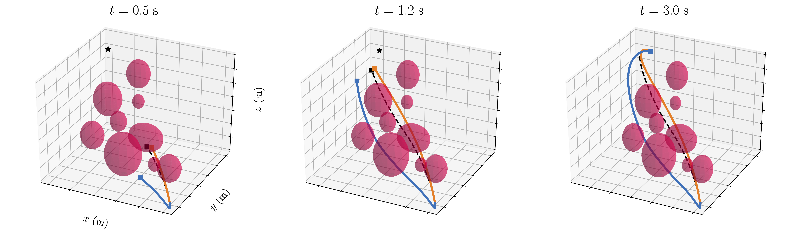

Crazyflie

The Crazyflie 2.1 nanoquadcopter is the development platform for my projects as a visiting PhD student at the IMTEK University of Freiburg, Germany. I've been under the supervision of professor Moritz Diehl at the Systems Control and Optimization Laboratory (syscop), and also supported by the Autonomous Intelligent Systems Lab (AIS) of professor Wolfram Burgard, and Kiteswarms.
All the experiments were performed at the AIS arena which has ten Raptor-E cameras running at 100 Hz. Furthermore, the Crazyflie count with:
NMPC for position control under communication time-delay

When flying, the Crazyflie is able to log a limited amount of data back to the ground station. By doing so, and depending on the size of the data package, this will cause latency issues and delays in receiving the requested onboard information from the ground station. Due to this fact, the majority of the control strategies is then made onboard the Crazyflie which allows to perform fast angular position and rate stabilization. On the other hand, one has to consider that the limited onboard computational resources also limits the range of control techniques that can be used for stabilization. Therefore, in this project it is proposed a time-delay compensation strategy so an offboard NMPC can be used for full state control.
This ROS stack contains the implementation of a position controller for the Crazyflie 2.1 based on NMPC with time delay compensation and bounds enforcement on the actuators. Due to the limited computational resources onboard, an offboard high-level position controller is proposed using the recently released high-performance software package acados which exploits the real-time iteration (RTI) scheme with Gauss-Newton Hessian approximation. The quadratic problems (QPs) arising in the NMPC problem are solved with HPIPM, an interior-point solver, based on the linear algebra library BLASFEO which is hand optimized for most recent CPU architectures.
bcbarbara/crazyflie_nmpc
Least Conservative Linearized Constraint Formulation for Real-Time Motion Generation
novel method for motion generation in dynamic environments based on real-time nonlinear model predictive control (NMPC). At the core of our approach is a least conservative linearized constraint formulation built upon the real-time iteration (RTI) scheme with Gauss-Newton Hessian approximation. We demonstrate that the proposed constraint formulation is less conservative for planners based on Newton-type method than for those based on a fully converged NMPC method. Additionally, we show the performance of our approach in simulation, in a scenario where the Crazyflie nanoquadcopter avoids balls and reaches its desired goal in spite of the uncertainty about when the balls will be thrown. The numerical results validate our theoretical findings and illustrate the computational efficiency of the proposed scheme.

